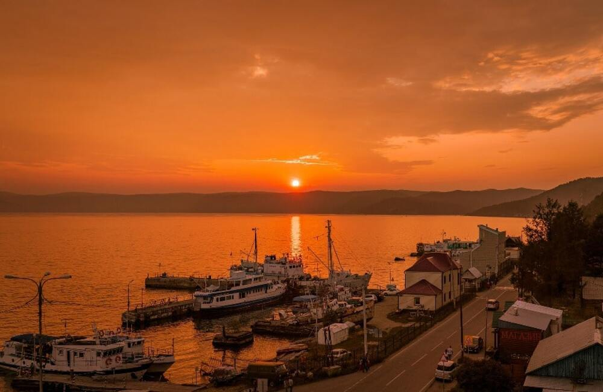
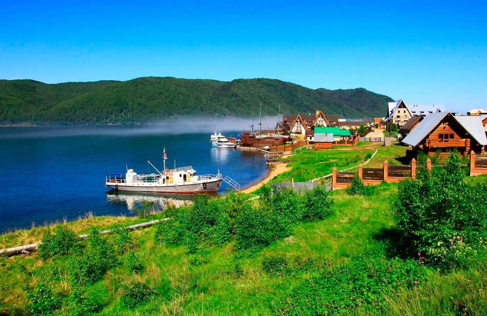
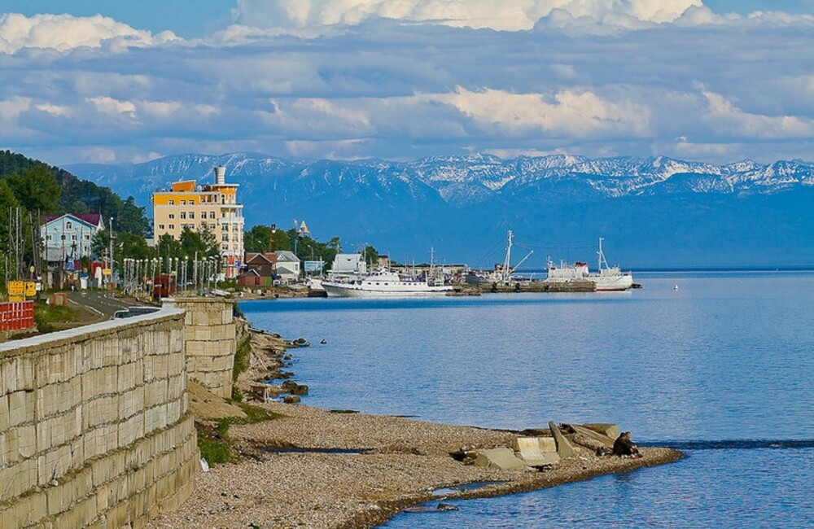
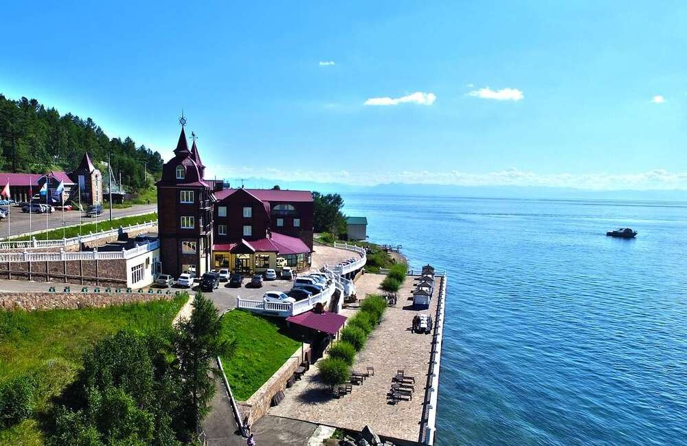

Листвянка





📍 Подробное описание маршрута
Листвянка расположена на юго-западном берегу Байкала в точке, где река Ангара вытекает из озера. Посёлок находится в пределах Иркутского района и является одним из основных туристических центров региона.
Маршрут из Иркутска проходит по Байкальскому тракту вдоль Ангары и занимает около 1–1,5 часов на автомобиле. Дорога полностью асфальтирована и проходит через лесные участки, постепенно выводя к береговой линии Байкала.
Основная туристическая зона Листвянки сосредоточена вдоль набережной Байкала, где расположены причалы, рынок и туристическая инфраструктура. Отсюда открываются виды на исток Ангары и противоположный берег Байкала.
В верхней части посёлка находится подъём к Камню Черского — обзорной площадке на высоте, откуда видны Байкал, исток Ангары и горные хребты.
📌 Ключевые точки
- Байкальский тракт (дорога из Иркутска)
- Набережная Листвянки
- Исток реки Ангара
- Байкальский музей СО РАН
- Камень Черского (смотровая площадка)
- Рыбный рынок Листвянки
🎯 Активности
- Прогулка по набережной Байкала
- Подъём на Камень Черского по канатной дороге
- Посещение Байкальского музея СО РАН
- Осмотр истока реки Ангара
- Покупка и дегустация байкальской рыбы на рынке
📍 Расстояние
≈70 км от Иркутска
🚗 Маршрут
Иркутск → Байкальский тракт → Листвянка
🌿 Сезон
Круглый год
💡 Практическая информация
- Это самый туристический и загруженный посёлок Байкала
- Цены выше, чем в других населённых пунктах региона
- Лучшее время для видов — утро и закат
- Камень Черского доступен через канатную дорогу или пешком